レア
日本橋のクリスマスツリー
日本橋の電気街に立つ大きなクリスマスツリーを見上げる場面。赤いマフラーを巻いたセラフィナと、サンタ帽のモコ。第10弾の幕開けの一枚です。
第10弾「クリスマス編」のカード全30種です。ツリーの飾り付けからイブの食卓まで、クリスマスの日本橋の場面です。
カードの画像はWeb鑑賞用サイズです。原画の高解像度イラストは、この弾のイラストパックでご覧いただけます。
この弾の所持 0 / 30種（0%）― あと30種で、この弾はコンプリートです
カードの画像はWeb鑑賞用サイズです。原画の高解像度イラストは第10弾『クリスマス編』のパック紹介ページからBOOTHのパックでご覧いただけます。ガチャで所持しているカードには「所持 ×N」と表示されます。
レア
日本橋の電気街に立つ大きなクリスマスツリーを見上げる場面。赤いマフラーを巻いたセラフィナと、サンタ帽のモコ。第10弾の幕開けの一枚です。
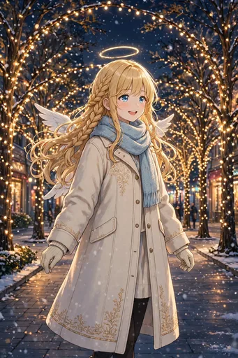
ノーマル
イルミネーションに彩られた冬の並木道を、冬コート姿で歩く場面。光のトンネルに目を輝かせています。
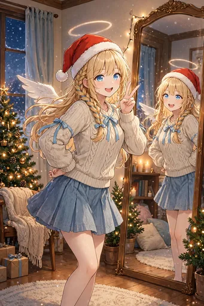
ノーマル
部屋でサンタ帽をかぶり、鏡の前ではしゃぐ場面。クリスマス準備のわくわくが伝わる、私服のひとコマです。
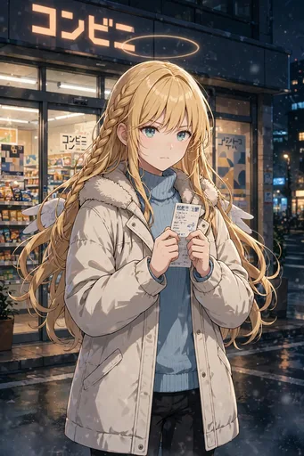
ノーマル
コンビニの前でフライドチキンの予約票を握りしめる場面。日本のクリスマスの主役を確保する、真剣な表情です。
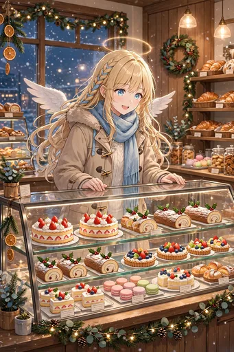
ノーマル
ケーキ屋のショーケース前で目を輝かせる場面。イチゴのショートケーキがずらりと並ぶ、日本のクリスマスの景色です。

レア
黒×赤のサンタ衣装で勝ち気にポーズを決めるルチアと、そばにノワール。悪魔流のクリスマスの楽しみ方です。
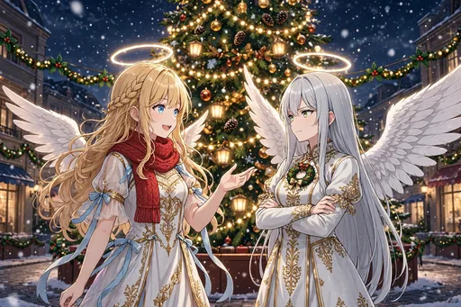
レア
「視察」の名目で訪れたガブリエラとツリーの前で。正装に小さなリースのブローチを添えた先輩天使です。
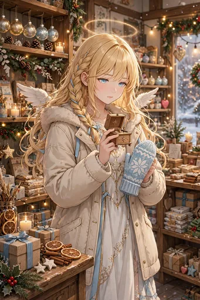
ノーマル
雑貨店でプレゼント選びに悩む場面。両手に候補を抱えて、誰に何を贈るか真剣に考えています。
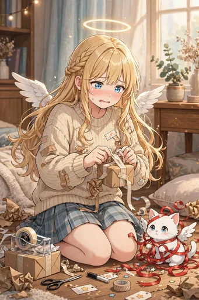
ノーマル
部屋で不器用なラッピングと格闘する場面。リボンまみれになったモコと一緒に、贈り物の準備は続きます。
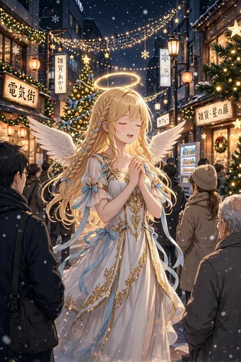
ノーマル
街角でクリスマスキャロルを歌う場面。天使の歌声に、通りがかりの人々が足を止めます。
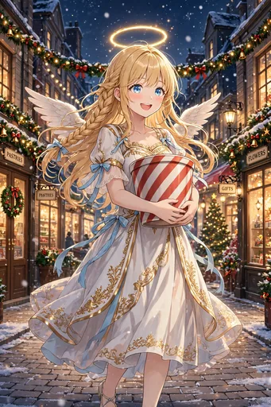
ノーマル
夜の街でチキンのバーレルを抱えて帰る場面。予約の成果を手に、満面の笑みです。
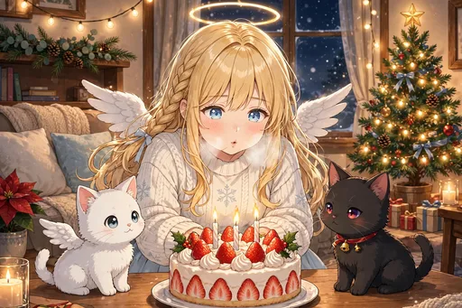
ノーマル
おうちでクリスマスケーキのろうそくを吹く場面。モコとノワールも一緒の、あたたかい部屋のひとときです。
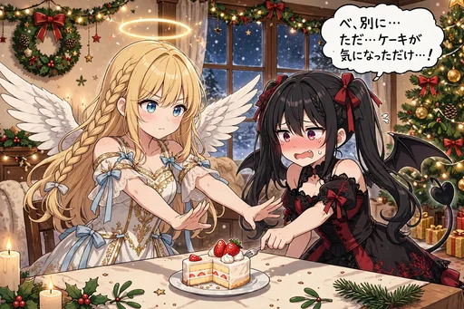
ノーマル
ケーキを巡るルチアとの攻防の場面。「べ、別に…」と照れるルチアの表情が光る、クリスマスの小競り合いです。
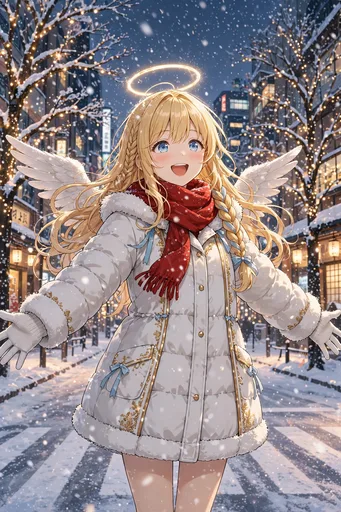
ノーマル
めずらしく雪の降る大阪ではしゃぐ場面。冬コートに手袋で、雪化粧の街を見上げています。
レア
寒い夜、疲れた会社員に温かい飲み物を差し出す場面。クリスマスでも「疲れた人のそばにいる」という本分は変わりません。
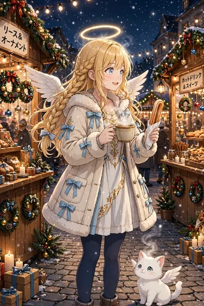
ノーマル
クリスマスマーケットの屋台をめぐる場面。ホットワイン風ジュースにチュロスと、冬の市場の賑わいです。
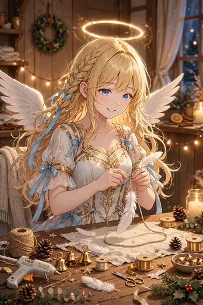
ノーマル
手作りのオーナメント作りに取り組む場面。羽根をかたどった飾りを、ツリーへそっと結びます。
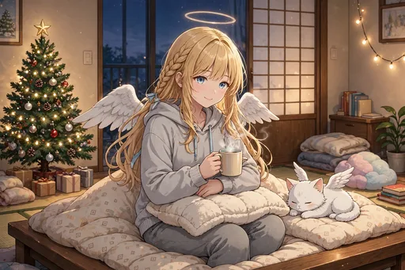
ノーマル
小さなツリーのある部屋でくつろぐ場面。部屋着でのんびり過ごす、日本の暮らしに馴染んだ日常です。
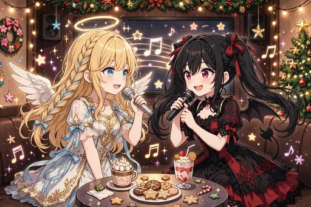
ノーマル
カラオケでルチアとクリスマスソングをデュエットする場面。天使と悪魔のハーモニーです。
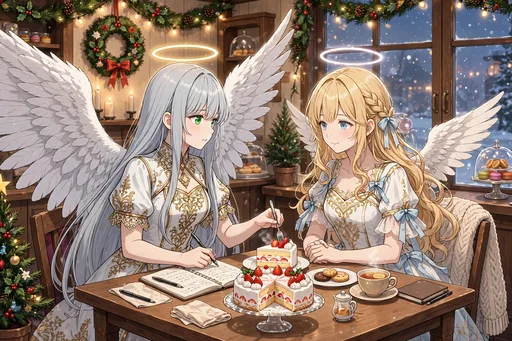
ノーマル
ケーキを「報告書用に」と言いながら二切れ目に手を伸ばすガブリエラの場面。視察のはずが、すっかり味わっています。
レア
クリスマスカードに天界への手紙をしたためる場面。日本の冬の出来事を綴りながら、少しだけホームシックになります。
ノーマル
遠くに教会の鐘の音を聞く、静かな場面。賑やかなクリスマスの中で、祈りの響きに耳を澄まします。
レア
サンタ衣装のモコが、小さなプレゼント袋をくわえた場面。小さな配達屋さんの出発です。
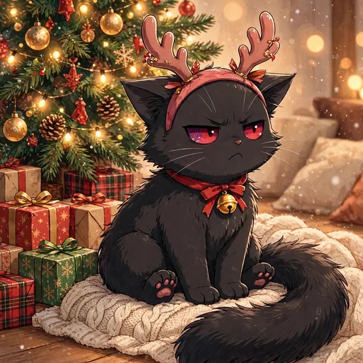
ノーマル
トナカイの角カチューシャをつけられたノワールの場面。高慢な不満顔が、クリスマスの笑いを誘います。

激レア
みんなで囲むクリスマスイブの食卓の場面。準備を重ねてきた一日の締めくくり、あたたかい団らんです。
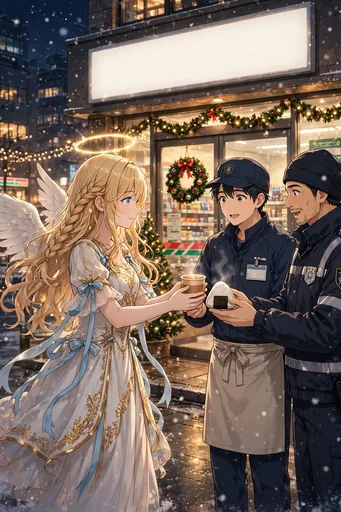
ノーマル
イブの夜に働くコンビニ店員や警備員さんへ差し入れを届ける場面。働く人への「おつかれさま」が、クリスマスの本分です。
レア
冬の星空を見上げる場面。輪が淡く光る、静かで澄んだ夜の一枚です。
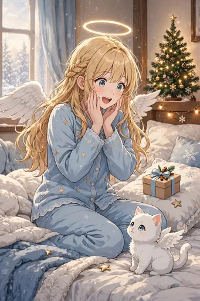
ノーマル
朝、枕元の小さなプレゼントに気づく場面。誰からかは秘密の、小さな優しさです。
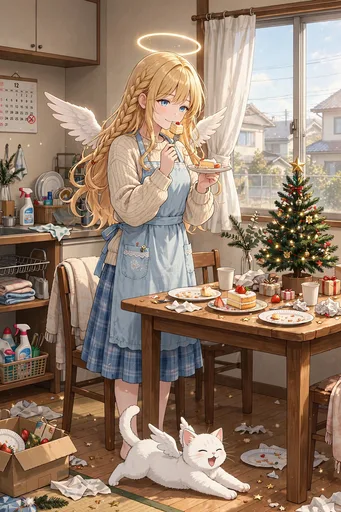
ノーマル
クリスマスの翌朝、片付けと残りケーキの朝ごはんの場面。生活者らしい、あたたかい締めくくりです。
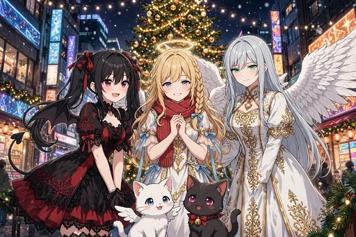
激レア
ツリーの前で、セラフィナ、ルチア、ガブリエラ、モコとノワールの全員集合の場面。第10弾のフィナーレです。